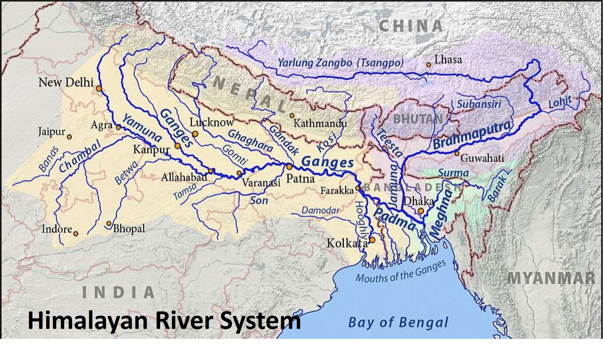

The Indus receives its most-notable tributaries from the eastern Punjab Plain. These five rivers—the Jhelum, Chenab, Ravi, Beas, and Sutlej—give the name Punjab (“Five Rivers”) to the region divided between Pakistan and India.
Ganga river system known as the Ganges-Brahmaputra-Meghna (GBM) River Basin, it is one of the largest river systems in the world. The melting water from the Himalayas, as well as water from tributaries and rainfall, all feed the sacred river. The Ganges flows south and east from the Himalayas, forming a canyon as it leaves the mountain.